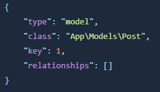

Si bien las propiedades de Livewire son una característica poderosa, existen algunas consideraciones de seguridad que debe tener en cuenta antes de usarlas.
En resumen, trate siempre las propiedades públicas como entradas del usuario, como si fueran entradas solicitadas desde un punto final tradicional. En vista de esto, es esencial validar y autorizar las propiedades antes de conservarlas en una base de datos, tal como lo haría cuando trabaja con la entrada de una solicitud en un controlador.
Para demostrar cómo descuidar la autorización y validación de propiedades puede introducir agujeros de seguridad en su aplicación, el siguiente componente UpdatePost es vulnerable a ataques:
A primera vista, este componente puede parecer completamente bueno. Pero veamos cómo un atacante podría usar el componente para hacer cosas no autorizadas en su aplicación.
Debido a que almacenamos la identificación de la publicación como una propiedad pública en el componente, se puede manipular en el cliente de la misma manera que las propiedades de título y contenido.
No importa que no hayamos escrito una entrada con wire:model="id". Un usuario malintencionado puede cambiar fácilmente la vista a lo siguiente utilizando las herramientas DevTools de su navegador:
Ahora el usuario malintencionado puede actualizar la entrada de identificación a la ID de un modelo de publicación diferente. Cuando se envía el formulario y se llama a update(), Post::findOrFail() devolverá y actualizará una publicación de la que el usuario no es propietario.
Para prevenir estos ataques podemos usar una de estas estrategias:
Debido a que $id se puede manipular en el lado del cliente con algo como wire:model, al igual que en un controlador, podemos usar la autorización de Laravel para asegurarnos de que el usuario actual pueda actualizar la publicación:
Si un usuario malintencionado muta la propiedad $id, la autorización agregada la detectará y generará un error.
Livewire también le permite "bloquear" propiedades para evitar que se modifiquen en el lado del cliente. Puede "bloquear" una propiedad para que no pueda ser manipulada por el lado del cliente utilizando el atributo #[Locked]:
Ahora, si un usuario intenta modificar $id en la interfaz, se generará un error.
Al usar #[Locked], puede asumir que esta propiedad no será manipulada en ningún lugar fuera de la clase de su componente.
Para más información consulta la documentación de bloqueo de propiedades.
Cuando se asigna un modelo de Eloquent a una propiedad de componente Livewire, Livewire bloqueará automáticamente la propiedad y se asegurará de que el ID no se cambie, para que usted esté a salvo de este tipo de ataques:
Otra cosa esencial que hay que recordar es que las propiedades de Livewire se serializan o "deshidratan" antes de enviarlas al navegador. Esto significa que sus valores se convierten a un formato que puede enviarse por la red y ser entendido por JavaScript (formato JSON). Este formato puede exponer información sobre su aplicación al navegador, incluidos los nombres y nombres de clase de sus propiedades.
Por ejemplo, supongamos que tiene un componente Livewire que define una propiedad pública llamada $post. Esta propiedad contiene una instancia de un modelo Post de su base de datos. En este caso, el valor deshidratado de esta propiedad enviada a través del cable podría verse así:
Como puede ver, el valor deshidratado de la propiedad $post incluye el nombre de clase del modelo (App\Models\Post), así como el ID y cualquier relación que se haya cargado ansiosamente con el método with().
Si no desea exponer el nombre de clase del modelo, puede usar la funcionalidad "morphMap" de Laravel de un service provider para asignar un alias a un nombre de clase del modelo:
Ahora, cuando el modelo Eloquent esté "deshidratado" (serializado), el nombre de la clase original no será expuesto, solo el alias "post":
Normalmente, Livewire puede preservar y recrear propiedades del lado del servidor entre solicitudes; sin embargo, existen ciertos escenarios en los que conservar los valores es imposible entre solicitudes.
Por ejemplo, al almacenar colecciones de Eloquent como propiedades de Livewire, las restricciones de consulta adicionales como select(...) no se volverán a aplicar en solicitudes posteriores.
Para demostrarlo, considere el siguiente componente ShowTodos con una restricción select() aplicada a la colección Todos Eloquent:
Cuando este componente se carga inicialmente, la propiedad $todos se establecerá en una colección Eloquent de los "To Do" del usuario; sin embargo, sólo se habrán consultado y cargado en cada uno de los modelos los campos de título y contenido de cada fila de la base de datos.
Cuando Livewire hidrata el JSON de esta propiedad nuevamente en PHP en una solicitud posterior, la restricción de selección se habrá perdido.
Para garantizar la integridad de las consultas de Eloquent, le recomendamos que utilice propiedades calculadas en lugar de propiedades normales.
Las propiedades calculadas son métodos en su componente marcados con el atributo #[Computed]. Se puede acceder a ellos como una propiedad dinámica que no se almacena como parte del estado del componente, sino que se evalúa sobre la marcha.
Aquí esta el ejemplo de arriba reescrito usando una propiedad calculada:
Así es como accedería a los "To Do" desde la vista Blade:
Observe que dentro de sus vistas, solo puede acceder a las propiedades calculadas en el objeto $this de esta manera: $this->todos.
También puedes acceder a los "To Do" desde dentro de tu clase. Por ejemplo, si tuvieras una acción markAllAsComplete():
Quizás se pregunte por qué no simplemente llamar a $this->todos() como método directamente donde lo necesita. ¿Por qué utilizar #[Computed] en primer lugar?
La razón es que las propiedades calculadas tienen una ventaja de rendimiento, ya que se almacenan en caché automáticamente después de su primer uso durante una única solicitud. Esto significa que puede acceder libremente a $this->todos dentro de su componente y tener la seguridad de que el método real solo se llamará una vez, para no ejecutar una consulta costosa varias veces en la misma solicitud.
Para más información visita la documentación de las propeidades calculadas.